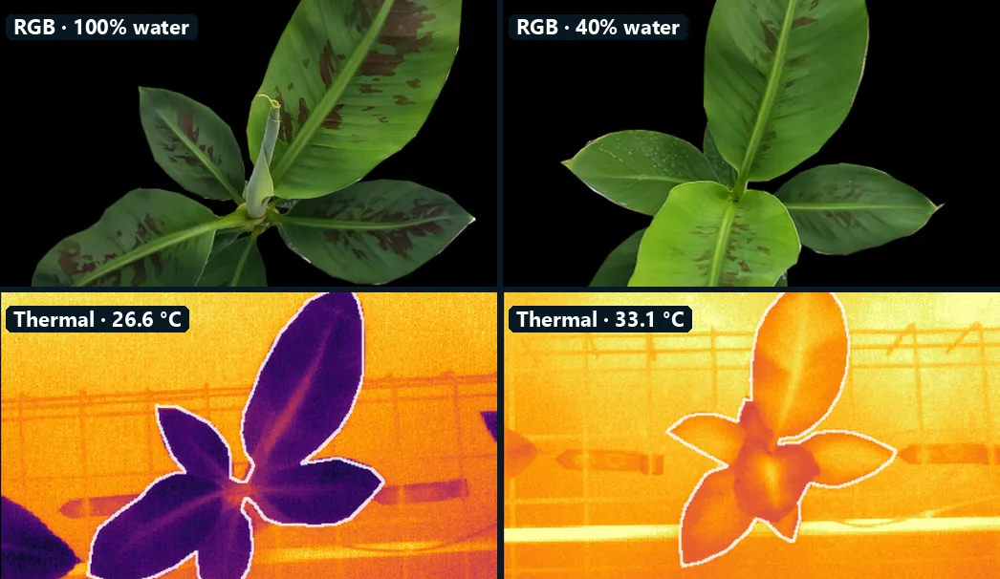
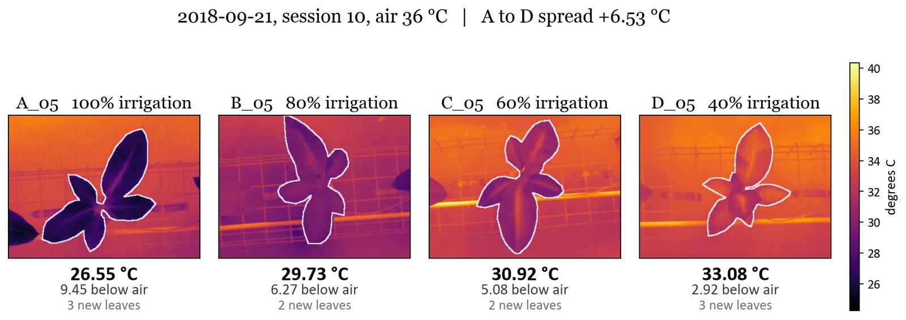
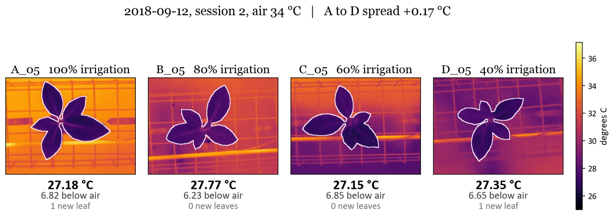
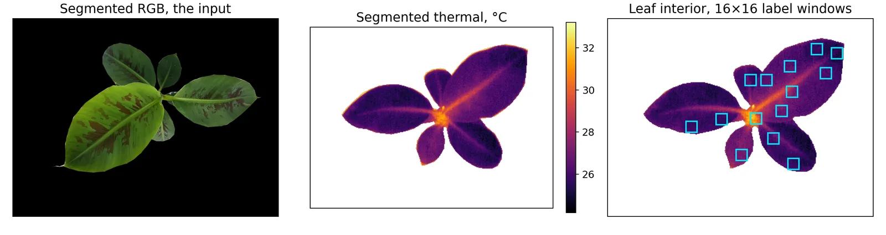
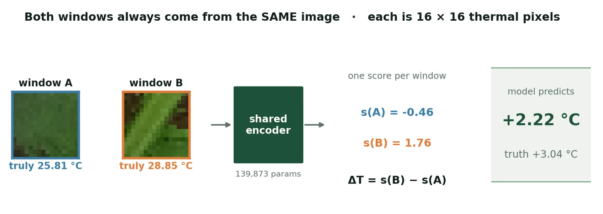
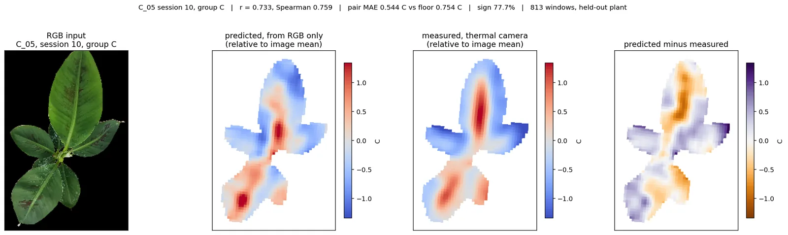
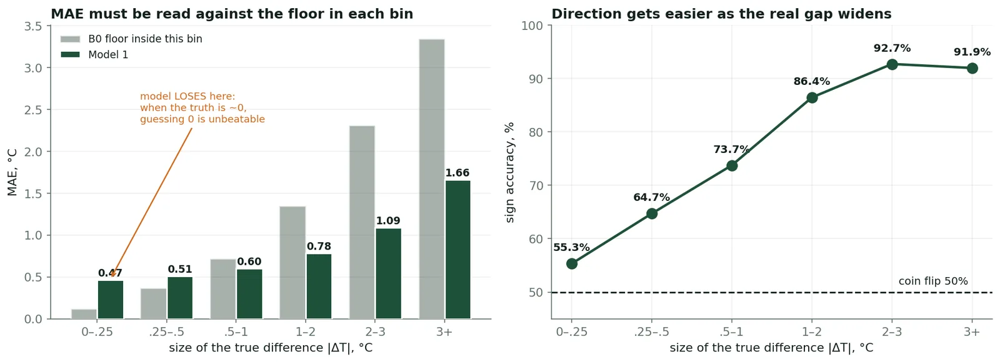
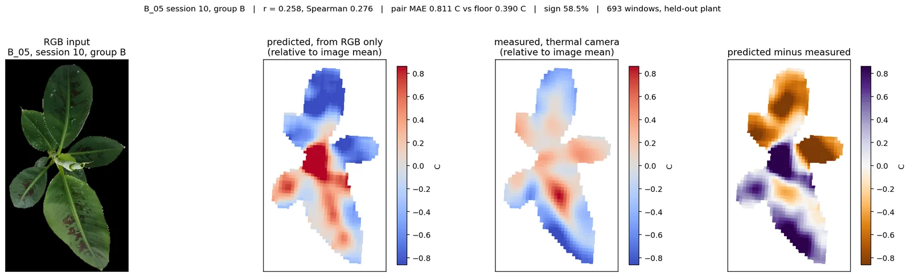

Water-stress sensing from an ordinary RGB camera
Can a cheap colour camera do the work of a thermal one? I use a thermal camera only as a teacher, so a small network can tell from an ordinary photo which leaf region is running warmer.

What this project is
The second workstream of my thesis asks whether plant water stress can be read from an ordinary colour camera. A thermal camera is an excellent stress sensor, but it costs hundreds to thousands of euros, has low resolution and is installed almost nowhere. RGB cameras are already everywhere.
The idea is to pay for thermal once, during data collection, and deploy RGB forever. The thermal image is the answer key during training, and only the RGB photo is used afterwards. I tested it first on a public banana RGB-thermal dataset. The next step is my own collection in the GTU greenhouse.
What needed solving
Irrigation is usually decided without measuring the plant. Growers measure the schedule, substrate moisture at a few points and the air, but not whether the plant needed water now or two hours ago. Over-irrigation wastes water and energy, leaches nutrients and invites root disease. Under-irrigation silently costs yield.
Leaf temperature carries that missing signal. A leaf with enough water evaporates it and cools. When water runs short the stomata close, transpiration drops and the leaf warms, minutes after the stomata respond and before any visible wilting. In the banana data, on one afternoon with 36 °C air, a fully irrigated plant sat 9.45 °C below air while a plant on 40% water sat 2.92 °C below: a 6.53 °C gap caused only by water supply. A thermal camera sees it clearly. In an RGB photo the plants look much alike.


What I did
- Framed the question and chose the harder target, leaf temperature in degrees, after reviewing 75 studies on RGB water-stress detection (2007 – 2026).
- Built the full pipeline: registration, leaf masking, windowing, pairing and plant-disjoint splits.
- Trained and evaluated the model across 67 logged runs, each stored with its seed, git SHA and config hash.
- Designed the leakage and shortcut controls, and audited the public dataset, where I found 16 issues.
- Wrote six rules for the team's own data collection.
- Presented the results at the GTU graduate seminar (Spring 2026) and at the SAgrIoT (DAAD) workshop at GTU on 6 October 2026.
I work under Prof. Dr. Yusuf Sinan Akgül, in the same project that has plant scientists from GTU Molecular Biology and Genetics hosting the greenhouse and the NUST team building the HarvesTrack dashboard.
How it works
Thermal as teacher
Collect RGB and thermal images of the same scene once. The thermal image gives the label in °C. After that a model of about 140,000 parameters runs on RGB alone, small enough for an edge node over every bench.
Ask a relative question
92% of the variation in leaf temperature is between images, which is the weather of the day. A model asked for absolute degrees mostly learns the weather (1.406 °C error against a 1.829 °C floor). So the model only compares two patches inside one frame, where light and air temperature cancel out.
Prepare the data
RGB and thermal images are registered per plant (median IoU 0.864). The leaf interior is masked and cut into 16 × 16 windows with stride 4, giving 1.4 million windows and about 1.08 million training pairs.
Pairwise model
One small CNN scores every patch, and the predicted temperature difference is score(b) − score(a). Swapping the two patches flips the sign exactly, and one pass per window paints a whole heat map.
Split by plant
88 plants for training, 16 for validation and 16 held out until the end. Plants, never images, are split, and disjointness is checked in code before every run.
Controls
Baselines were built before training, and eight leakage and shortcut controls test whether the model really uses the leaf pixels.


Tools and methods
What came out of it
On 195,376 held-out pairs from 16 plants the model never saw. Simple baselines were built first:
| Predictor | Error (°C) | Sign accuracy |
|---|---|---|
| Always predict zero (the floor) | 1.143 | n/a |
| Patch brightness only | 1.016 | 66.3% |
| Position in the leaf only | 1.005 | 66.9% |
| Shuffled labels (leak check) | 1.143 | 49.9% |
| Pairwise CNN | 0.764 | 75.5% |

Accuracy depends on how big the real temperature gap is:
| True gap between patches | Sign accuracy |
|---|---|
| 0 – 0.25 °C | 55.3% |
| 0.5 – 1 °C | 73.7% |
| 2 – 3 °C | 92.7% |
| Above 3 °C | 91.9% |
It is close to chance where the difference is too small to matter, and above 90% where it is large enough to act on.

Plant to plant, scored so that a rule knowing only the irrigation group gets exactly 50, the pilot reaches 64.8 against a floor of 50.4 across 7,236 pairs. Accuracy rises steadily with the true temperature gap (r = +0.97), which a group recogniser cannot produce.

What it cannot do, stated plainly:
- It is a relative sensor. It tells you which part of a canopy is running warmer, not how warm.
- The offset between images is lighting, so a grey reference card is needed in every frame.
- Thermal texture inside a small patch cannot be recovered from RGB. Auxiliary input, distillation and modality dropout all gave the same answer.
- In the public dataset the irrigation label can be recovered 100% from capture order alone, so published accuracies on it may measure the protocol, not the plant.
Next, my own collection follows six rules: randomise capture order, put a grey card in every frame, include a pre-treatment placebo period, use more plants and days, capture across the whole day, and record physiological ground truth on a subsample.
Interested in similar work?
Tell me about your computer vision or deep learning problem and we can see if it's a good fit.
👋 Let's talk